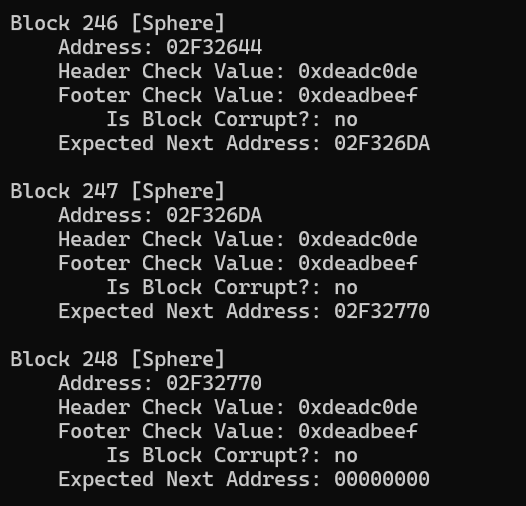
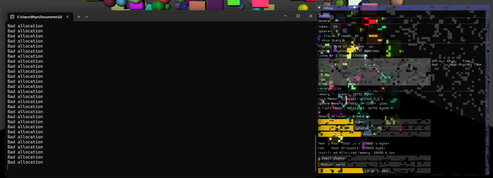

This project focussed on low-level optimisation in C++. I implemented a custom memory manager, memory pools and multithreading via a quadtree. The project was also ported to PS4 where the same multihreaded functionality was recreated.
Heap memory is managed in the project using two primary mechanisms. Firstly, new and delete have been overwritten. This allows for more information to be stored inside of a memory manager class and it allows the use of the secondary mechanism: memory pools. Memory pools have memory allocated to them on initialisation and can provide a chunk of that memory to anything that requests it, hence avoiding expensive runtime memory allocation. By overwriting new, the user can be provided this chunk of memory without having to interact directly with the memory manager.
The overwritten new and delete operators can be seen below:
void* operator new (size_t size, Tracker*& pTracker, TrackedClasses className)
{
std::lock_guard lock(*MemoryManager::memoryMutex);
size_t nRequestedBytes = size + sizeof(Header) + sizeof(Footer);
char* pMem;
if (MemoryManager::memory_pool_mode)
{
if (MemoryManager::s_pMainMemoryPool == nullptr)
{
MemoryManager::s_pMainMemoryPool = (MemoryPool*)malloc(sizeof(MemoryPool));
MemoryManager::s_pMainMemoryPool->InitMemoryPool();
}
pMem =(char*)MemoryManager::s_pMainMemoryPool->AllocMemory(nRequestedBytes);
if (pMem == nullptr)
{
pMem = (char*)malloc(nRequestedBytes);
}
}
else
{
pMem = (char*)malloc(nRequestedBytes);
}
Header* pHeader = (Header*)pMem;
void* pFooterAddr = pMem + sizeof(Header) + size;
Footer* pFooter = (Footer*)pFooterAddr;
void* pStartMemBlock = pMem + sizeof(Header);
if (pTracker == nullptr)
{
char* pTrackerMem = (char*)malloc(sizeof(Tracker));
pTracker = (Tracker*)pTrackerMem;
pTracker->Init();
pTracker->className = className;
pTracker->firstHeader = pHeader;
}
pHeader->size = size;
pHeader->m_Tracker = pTracker;
pHeader->m_Tracker->AddBytesAllocated(nRequestedBytes);
pHeader->checkValue = 0xDEADC0DE;
pHeader->next = nullptr;
if (pHeader->m_Tracker->firstHeader == nullptr)
{
pHeader->m_Tracker->firstHeader = pHeader;
}
if (pHeader->m_Tracker->latestHeader != nullptr)
{
pHeader->m_Tracker->latestHeader->next = pHeader;
}
pHeader->m_Tracker->latestHeader = pHeader;
pFooter->checkValue = 0xDEADBEEF;
return pStartMemBlock;
}
void operator delete(void* pMem)
{
std::lock_guard lock(*MemoryManager::memoryMutex);
if (pMem == nullptr) return;
Header* pHeader = (Header*)((char*)(pMem) - sizeof(Header));
Footer* pFooter = (Footer*)((char*)(pMem) + pHeader->size);
if (pHeader->m_Tracker != nullptr && (pHeader->checkValue != 0xDEADC0DE || pFooter->checkValue != 0xDEADBEEF))
{
std::cout << "Bad allocation\n";
return;
}
if (pHeader->m_Tracker != nullptr) {
if (pHeader->m_Tracker->firstHeader == pHeader) {
pHeader->m_Tracker->firstHeader = pHeader->next;
if (pHeader->next == nullptr) {
pHeader->m_Tracker->latestHeader = nullptr;
}
}
else {
Header* prevHeader = nullptr;
Header* currentHeader = pHeader->m_Tracker->firstHeader;
while (currentHeader && currentHeader != pHeader) {
prevHeader = currentHeader;
currentHeader = currentHeader->next;
}
if (currentHeader == nullptr) {
std::cout << "header not found in tracker\n";
return;
}
prevHeader->next = pHeader->next;
if (pHeader == pHeader->m_Tracker->latestHeader) {
pHeader->m_Tracker->latestHeader = prevHeader;
}
}
pHeader->m_Tracker->RemoveBytesAllocated(pHeader->size + sizeof(Header) + sizeof(Footer));
}
if (MemoryManager::memory_pool_mode && MemoryManager::s_pMainMemoryPool->ReturnMemory(pHeader)) {
return;
}
safeFree(pHeader);
}
The memory manager also allows us to check the integrity of the memory by walking the heap as can be seen below. As we go from one chunk of memory to the other, we are able to check the integrity via ensuring no check values have been corrupted.

When the memory does become corrupt the memory manager is able to detect it, as seen below:

In order to optimise the collisions taking place per frame, I implemented a quadtree algorithm which allows for the collisions in any given quadrant of that quadtree to be performed on their own thread. The quadtree takes in a minimum quadrant size which it uses to dynamically create the quadrants when needed. The quadtree is generated recursively via the function below:
void Quadtree::BuildTree()
{
if (m_objects.size() <= 1) return;
float dimensionsX = m_region.m_maxX - m_region.m_minX;
float dimensionsZ = m_region.m_maxZ - m_region.m_minZ;
if (dimensionsX < MIN_SIZE && dimensionsZ < MIN_SIZE) return;
float halfX = dimensionsX / 2.f;
float halfZ = dimensionsZ / 2.f;
float centreX = m_region.m_minX + halfX;
float centreZ = m_region.m_minZ + halfZ;
BoundingBox quadrant[4];
quadrant[0] = BoundingBox(m_region.m_minX, m_region.m_minZ, centreX, centreZ);
quadrant[1] = BoundingBox(centreX, m_region.m_minZ, m_region.m_maxX, centreZ);
quadrant[2] = BoundingBox(centreX, centreZ, m_region.m_maxX, m_region.m_maxZ);
quadrant[3] = BoundingBox(m_region.m_minX, centreZ, centreX, m_region.m_maxZ);
std::vector octList[4];
std::vector delist;
for (auto& obj : m_objects)
{
if (obj == nullptr)
{
continue;
}
BoundingBox objBox = BoundingBox(obj->position.x - obj->size.x, obj->position.z - obj->size.z,
obj->position.x + obj->size.x, obj->position.z + obj->size.z);
for (int i = 0; i < 4; i++)
{
if (quadrant[i].Contains(objBox))
{
octList[i].push_back(obj);
delist.push_back(obj);
break;
}
}
}
for (auto& obj : delist)
{
if (obj == nullptr) continue;
m_objects.erase(std::remove(m_objects.begin(), m_objects.end(), obj), m_objects.end());
}
delist.clear();
for (int i = 0; i < 4; i++)
{
if (!octList[i].empty())
{
m_children[i] = CreateNode(quadrant[i], octList[i]);
m_children[i]->BuildTree();
octList[i].clear();
}
}
m_treeBuilt = true;
m_treeReady = true;
}
A lot of the details regarding PS4 porting cannot be written about in explicit detail due to NDA rules; although I can still speak broadly. The primary differences between the two platforms, for the sake of this project, came in the form of the difference in underlying graphics API as well as how threads are managed. In order to successfully port the project, I wrote the relevant graphics code based on the examples provided by Sony, loaded and used the platform specific threading features. Throughout the entire porting process I had to refer to the documentation and research the hardware architecture of the PS4 in order to properly allocate memory..
Original Framework by Staffs Uni
This project was worked on from October 2024 - December 2024
The memory manager is fully feature complete and works well. It does not corrupt memory and works across multiple threads.
The memory pools could be more complex. At current, memeory is allocated based on a compiler defined arbitrary value. Additionally, the chunks of memory could be aligned properly in order to be more cache friendly. The quadtree algorithm could also be improved by taking into account edgecases, such as when a collider is in multiple quadrants at once.
Rhys Elliott 2025. rhyselliottdev@protonmail.com